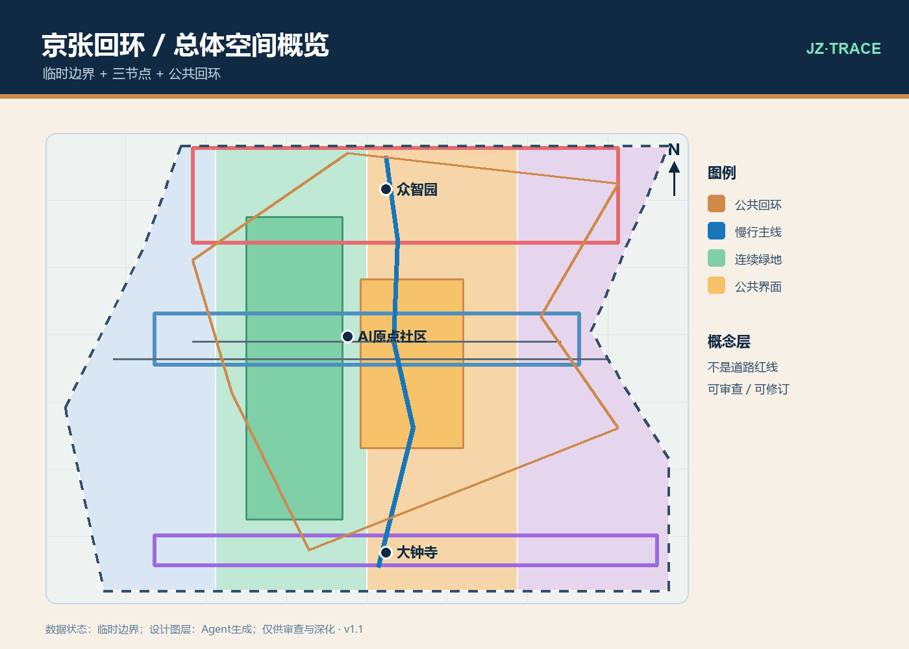
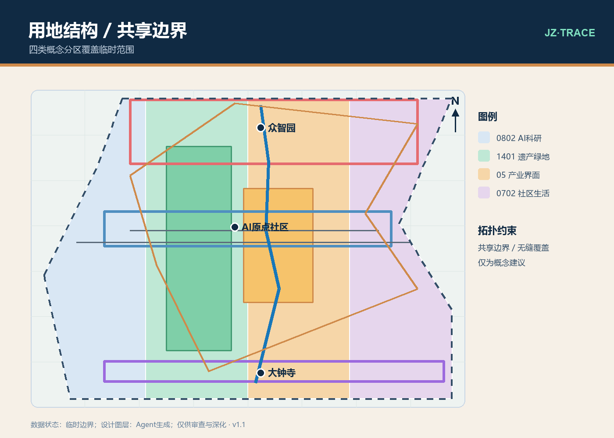
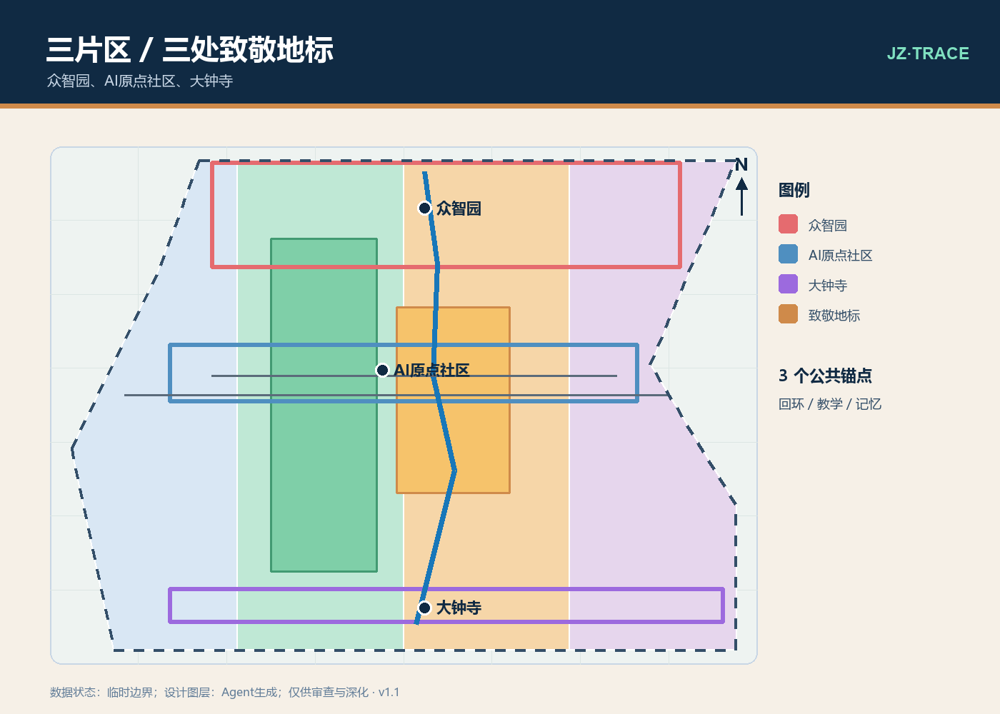
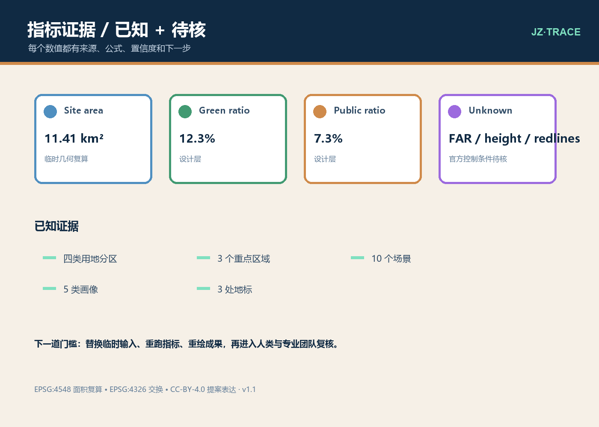

JZ·TRACE LOOP / 本地静态可视化 • English counterpart available
京张回环
面向遗产、科研与日常生活的可验证 AI 创新公共带

一条公共回环、三处节点、两翼协同，每一步都设置人类复核门槛。
任务覆盖
总览地图 · 三层范围 · 用地分区 · 交通慢行 · 蓝绿公共空间 · 建筑 · 更新项目 · AI 场景 · 核心指标 · 任务覆盖 · 自检状态 · 假设
范围
约 43.6 平方公里统筹研究语境、约 11.4 平方公里公告总体设计语境和三个重点区域。官方多边形缺失处明确使用临时几何。
空间提案
京张记忆线、公共横联、低扰动更新和三处可解释 AI 公共客厅，共同构成不冒充法定规划的创新带。
重点区域
众智园是可解释算力花园；AI原点社区是近校原点客厅；大钟寺是城市智能交换场。
AI+ 场景
十张场景卡、三个产业测试和五类画像都采用最小数据、授权、人审、离线退路和撤回机制。
蓝绿与可达
连续绿地、公共界面、不依赖设备的参与方式和无障碍路线是设计目标，现场测绘与专业复核仍是下一步。
分期
一期测试可逆的公共回环原型；二期测试经授权的公共界面；三期在官方资料、专业审查与公众复盘后深化。
风险与版权
概念几何不是批准、红线、权属判断或建设承诺。自绘表达采用 CC-BY-4.0，并保留来源和使用限制。
证据图纸



审查规则
每个场景必须说明来源、授权、最小数据、人审升级、离线退路和撤回。每个空间图层必须说明它是官方、临时还是 Agent 生成。
下一道门槛
用已清官方数据替换临时几何，重跑 EPSG:4548 指标，重绘整个成果包，再进入人类与专业团队复核，之后才讨论实施。